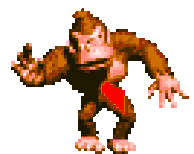
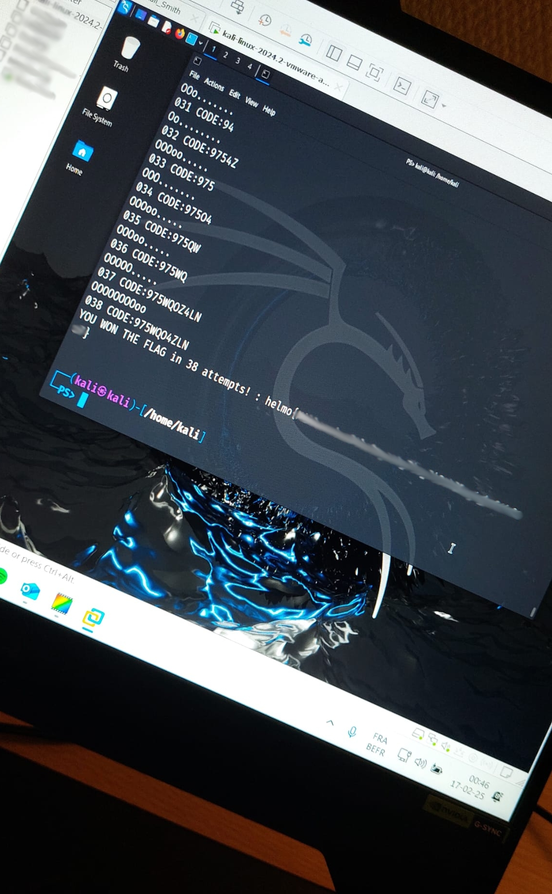
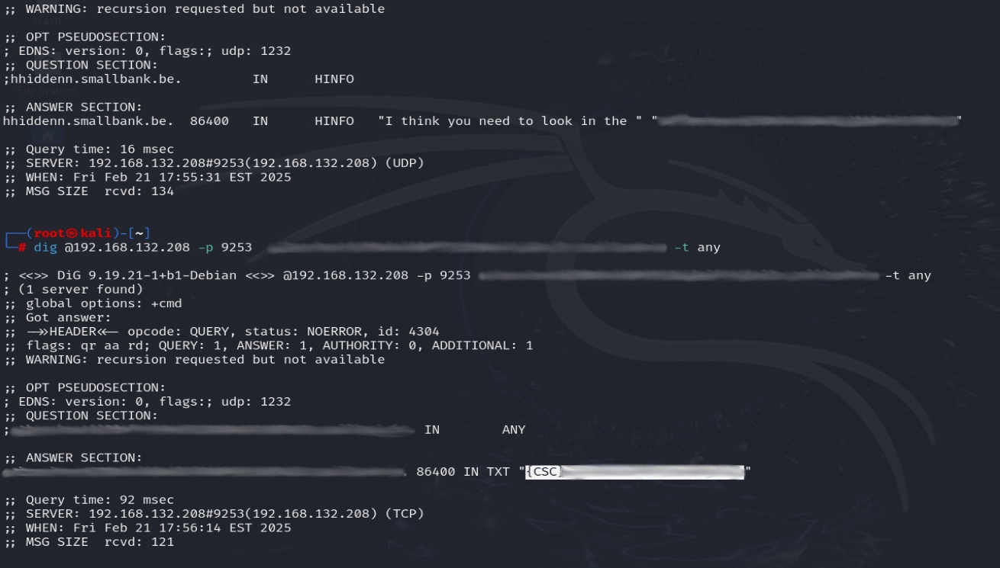

La fièvre du CTF
Il y a un peu plus d'un mois, j'ai découvert qu'il existait une chose que j'ai toujours faite dans ma vie.
J'aime les défis, les mystères, les choses cachées, celles qui se relient entre elles pour créer une oeuvre totalement complexe et unique.
Dans mes écrits, j'ai toujours aimé les liens.
L'action de se continuer à travers le temps, n'est-ce pas profondément
ancrée en nous ?
Quel plaisir que de trouver ces pépites d'or qui nous mènent au trésor
complet.
Dans le monde de l'informatique, ces trésors existent sous le nom de
CTF.
CTF est l'acronyme de Capture The Flag.
Un flag, pour ceux qui ont du mal avec l'anglais, c'est un drapeau.
En traduction française, c'est Capturer Le Drapeau.
En quoi ça consiste concrètement ?
Ce sont des challenges informatiques plus ou moins complexes, conçus
pour tester et développer nos compétences dans plusieurs domaines : la
cryptographie, le reverse engineering, le web, ou encore le forensic.
L'objectif, c'est de trouver le drapeau, afin de marquer des points et
de grimper dans un classement.
Quand on le fait pour la première fois, c'est dur.
Oui, on peut passer des heures entières sur un challenge, s'arracher
les cheveux sans savoir comment s'y prendre. Et devinez quoi ? C'est
souvent à la limite de l'abandon que l'on comprend comment l'exercice
doit être abordé.
La compétitivité joue aussi un grand rôle.
Voir d'autres personnes réussir, ça nous donne envie de nous
surpasser. Une fois le challenge réussi, le système de récompense dans
notre cerveau s'active et procure un sentiment d'accomplissement
incroyable.

Toutefois, attention à ne pas abuser des bonnes choses.
Rester jusqu'à 2h du matin avec ses camarades, c'est peut-être cool,
mais le réveil le lendemain matin sera dur.
Il faut de la mesure dans toute bonne chose.

Pour réussir un CTF, il faudra user de stratégies, être polyvalent, ou alors compter sur une équipe solide où chacun pourra exceller dans son domaine.
Sans parler des faux flags, des fausses pistes ou de ces petites phrases provocatrices qui nous piquent au coeur...

A force de persévérance, on finit toujours par trouver des indices.
Mais il est nécessaire d'avoir de bonnes bases.
Aujourd'hui, l'IA peut être un outil utile pour mieux comprendre
certains aspects techniques, mais elle ne fera pas tout à notre
place.
De toute façon, elle possède encore ses limites. Beaucoup ont déjà
essayé, moi-même y compris, mais l'IA ne résout pas encore les défis
trop complexes. ;-)
Le CTF est un exercice unique pour les esprits curieux.
N'ayez pas peur d'être perdu, ayez plutôt peur de ne jamais vous
perdre.
Quoi qu'il arrive, à un moment donné, le DNS vous permettra toujours de retrouver votre chemin.
